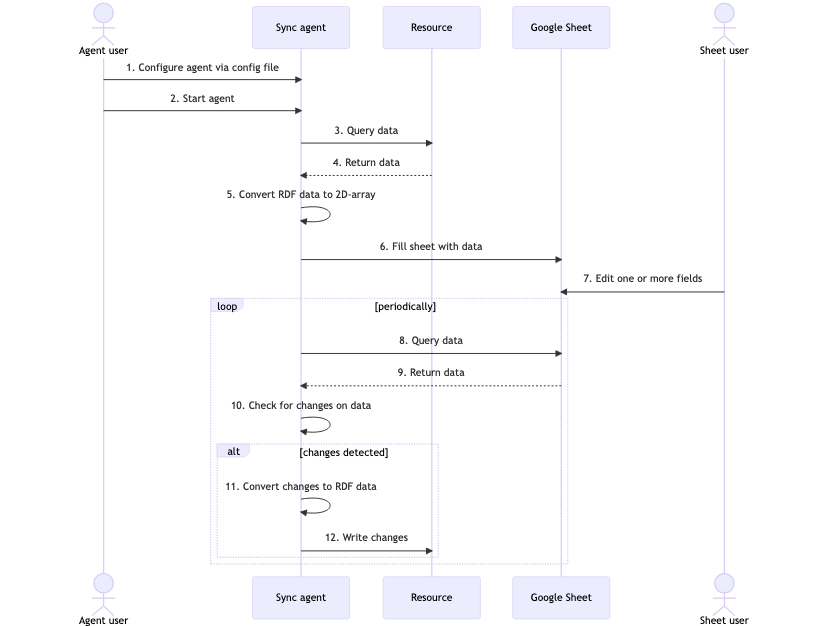

Agent that syncs pods and Google Sheets (permalink)
The corresponding challenge is #120, which contributes to scenario #119.
Problem
A lot of users use Google Sheets to view and edit data. This data can be stored in Google Sheets itself or it can be coming from an external data source such as a MySQL database or MongoDB. So far, there is no solution that exists that allows doing this with data in Solid pods. Challenge #120 focuses on the agent/backend part of a solution for this problem.
Approved solution
We created an agent that syncs data between a Google Sheet and a resource on a Solid pod. It has the following features:
- Users define which Google Sheet and resource the agent syncs.
- Users define via a SPARQL query what data the agent selects from the resource.
- Users define via YARRRML rules how the data from the sheet is converted to RDF before it is stored in the resource.
- The agent overwrites the sheet with all the queried data when it launches.
- The agent periodically checks the sheet for changes and stores these changes in the resource.
- The agent only works with public resources.
You find a screencast of the agent here. You find the details on how to configure the agent for your use case here. This includes how to use your own sheets, pods and queries.
We made the following important technological decisions and assumptions:
- We did not include Solid authentication in this agent because we have done authentication in other challenges, and it is not crucial for this challenge. This is the corresponding issue to implement this.
- We compare the RDF of the original data in the sheet with the RDF of the current data in the sheet to determine what triples needed to be added to and deleted from the resource. See this part of the code.
- We use a public instance of the RMLMapper Web API to convert data from the sheet to RDF. It is possible to set up a local instance of this API if you don't want to use a public one.
- We make use of the googleapis to interact with Google Sheets. But we did not find any open-source library that already does the two-way syncing of Google Sheets with another data source. And to which we could directly add support for Solid. We either found snippets that use the aforementioned library or commercial solutions that are not open source.
- The agent needs access and refresh tokens to interact with Google Sheets on behalf of the user of the sheet. The agent reads these tokens from a JSON file. How the tokens are added to the JSON file is out of scope of the agent. Therefore, we provide an authentication server. This server asks the user of the sheet to log in with their Google account and give access to the agent to make changes to Google Sheets.
Below you find a sequence diagram of how the agent works with the resource and the Google Sheet.

The diagram has the following steps:
- The user of the agent configures the agent via a config file.
- The user of the agent starts the agent.
- The agent queries the data from the resource on the pod.
- The resource returns the data as RDF.
- The agent converts the RDF to a 2D-array.
- The agent fills the sheet with the data from the array.
- The user of the sheet edits one or more fields.
- Periodically the agent checks for changes. This starts with querying the data from the sheet.
- The sheet returns the data.
- The agent checks if there are changes on the data.
- If there are changes, the agent converts the changes to RDF.
- The agent writes the changes to the resource.
User flow
This user flow describes how to set up a demo of the agent.
Actors/actresses
- User of the agent.
- User of the Google Sheet.
- User of the pod.
In the steps below we don't make a difference between the different users as these steps are only meant to demo the solution of the challenge.
Preconditions
- The users of the agent and pod have Node.js installed.
- The user of the agent has set a Client ID and Secret for the Google API. See these instructions.
- The user of Google Sheet has a sheet that the agent can sync with.
Steps
- Clone the repository (v1.0.0) via
shell
git clone -b v1.0.0 https://github.com/SolidLabResearch/google-sheet-sync.git
- Install the dependencies via
shell
npm i
- Start the authentication server that enables us to give access to a Google account via
shell
npm run auth
The server is ready when the following message appears in the terminal:
text
Authentication server running on port 8081
We will use this account to access the aforementioned Google Sheet. 4. Navigate to http://localhost:8081 in the browser. 5. Click on the "Authenticate" button. 6. Log in with the Google account that has access to the aforementioned Google Sheet. 7. Click on "Continue" when you get the message "Google hasn't verified this app". 8. Click on "Continue" when you get the message "Sheet Solid sync wants access to your Google Account". 9. If the authentication succeeded, then you get the message "Authentication successful. Credentials written to credentials.json." 10. Stop the sever via CTRL + C. 11. Prepare the local instance of the Community Solid Server (CSS) via
```shell
npm run prepare:pods
```
-
Start the CSS instance via
shell npm run start:podsThe agent will use the data in the resource http://localhost:3000/example/software. The CSS instance is ready when the following message appears in the terminal:
text Listening to server at http://localhost:3000/ -
Open another terminal.
-
Copy the example config
config.query.example.ymltoconfig.ymlviashell cp config.query.example.yml config.yml -
Set the
sheet.idinconfig.ymlto the ID of the Google Sheet. See these instructions. -
Copy the example YARRRML rules
rules.example.ymltorules.ymlviashell cp rules.example.yml rules.yml -
Start the agent via
shell npm start -
The agent has synced the data that is in the resource http://localhost:3000/example/software to the Google Sheet once the following message appears in the terminal:
text Synchronisation cold start completed -
Verify that the data is in the Google Sheet.
- Change a cell in the Google Sheet.
-
The agent will detect this change and update the resource. The update is done when the following message appears in the terminal:
text Synchronization done. -
Verify that the agent updated the resource by browsing to http://localhost:3000/example/software.
Postconditions
None.
Follow-up actions
- Users can only define one resource because the agent can only store the changes from a Google Sheet in one resource. The agent should be able to support multiple resource. This is the corresponding issue.
Future work
- Automatically determine the corresponding YARRRML rules for a SPARQL query.
Lessons learned about developer experience
None.
Contributors
- Challenge: Pieter Heyvaert
- Solution: Pieter Heyvaert
- Report: Pieter Heyvaert